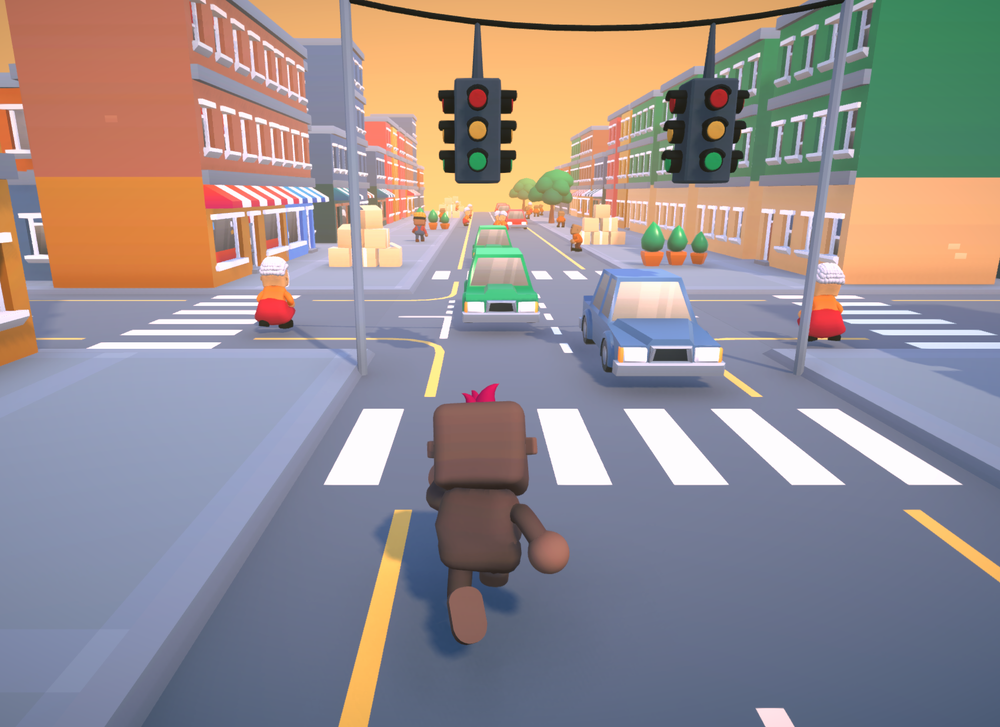
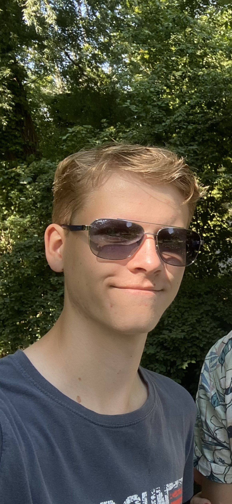

Some Games I've Made
Bubble Gummer


48~ hours | Unity, C#
This game was made for Global Game Jam 2025, with the theme of "Bubble".
I worked with 6 other people and we made a movement shooter where you use bubbles to bounce around and gain speed.
Technologies used:
- Unity
- C#
Downtown Destruction

72~ hours | Unity, C#
This is my third Game Jam game, which I made with 4 other people.
The theme for this Jam was "Chaos", and we made an infinite runner where you get points for running into things and causing chaos.
Technologies used:
- Unity
- C#
- Procedural Generation
- Object pooling
Disco Demolition Knight


6 weeks | Unity, C#
This is a project I did together with 11 other people.
The game is about surviving hoards of enemies, using different musical weapons, that fire in sync with the music.
Technologies used:
- Unity
- C#
- FMOD
- Beat-syncing
- Space partitioning
Murder of Crows + BOIDS in Unity DOTS


2 weeks | Unity, C#
A game where you control a flock of crows in a 3D environment, using BOIDS algorithm.
Later made a dataoriented implementation in Unity DOTS.
Technologies used:
- Unity (DOTS)
- C#
- Data oriented programming
- BOIDS-algorithm for bird movement
- Optimization with octrees
Spelunky-inspired prototype


3 weeks | Unity, C#
A prototype inspired by the original 'Spelunky' game. Made to try out state machines and procedural generation.
Technologies used:
- Unity
- C#
- Procedural Level Generation
Fia knuffar


48 hours | Unity, C#
My second Game Jam game.
This was made together with 3 other people, and the theme was "Fall", which we depicted with the main goal being making enemies fall off a building.
Technologies used:
- Unity
- C#
Starstruck


48 hours | Unity, C#
My first ever Game Jam game. This project was made with 4 other people and is about collecting worshippers.
These worshippers can be used as a shield, but can also be sacrificed in order to upgrade your character.
Technologies used:
- Unity
- C#
- AI navmesh
This Website!

A while | HTML, CSS, javascript
I programmed this website myself using HTML and CSS